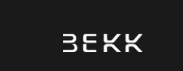
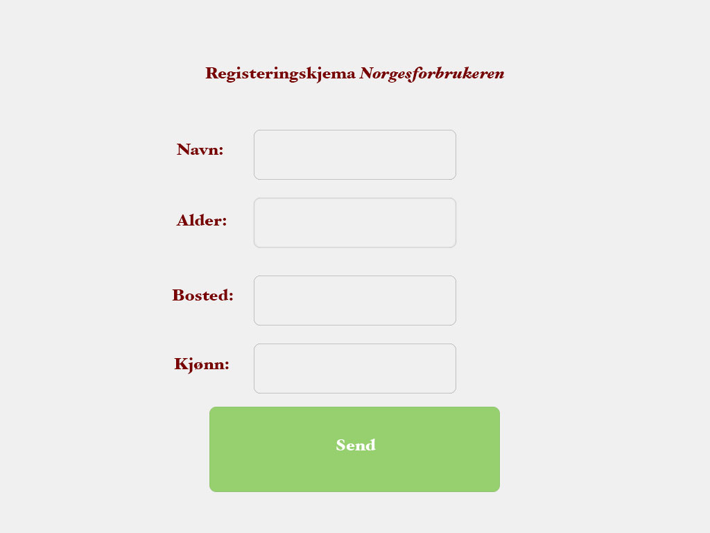
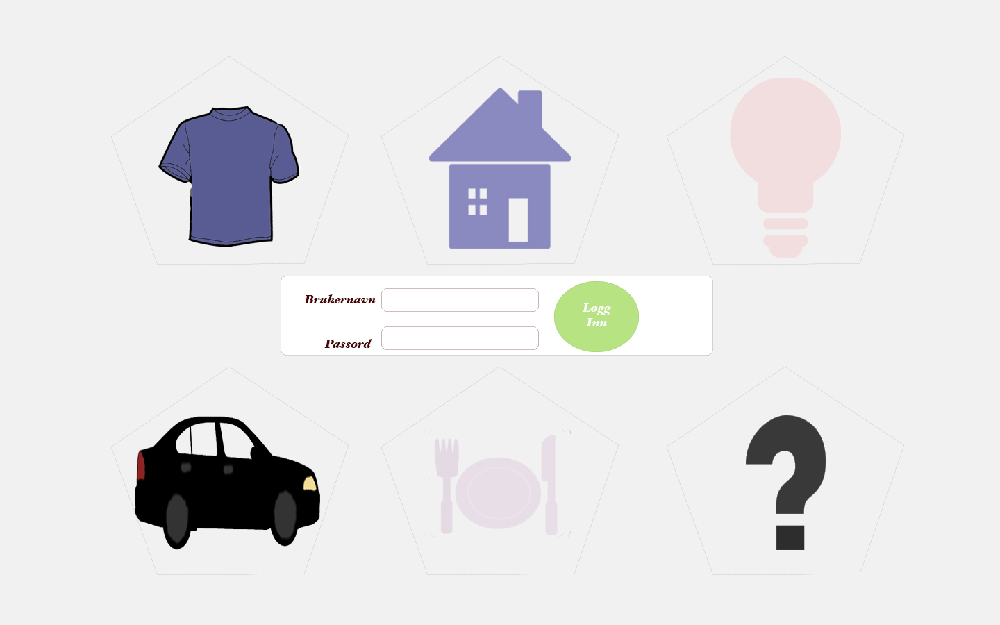
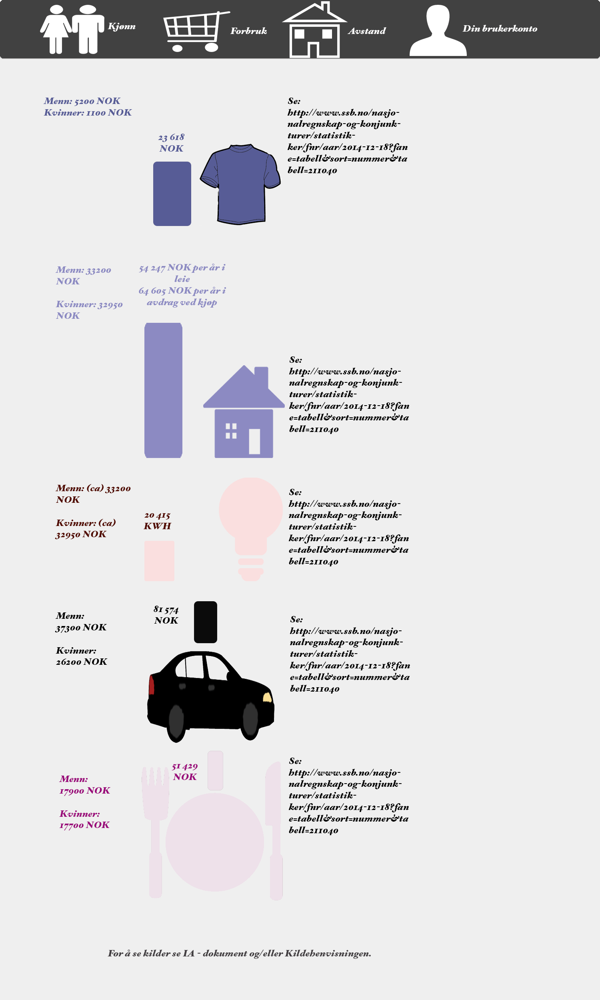
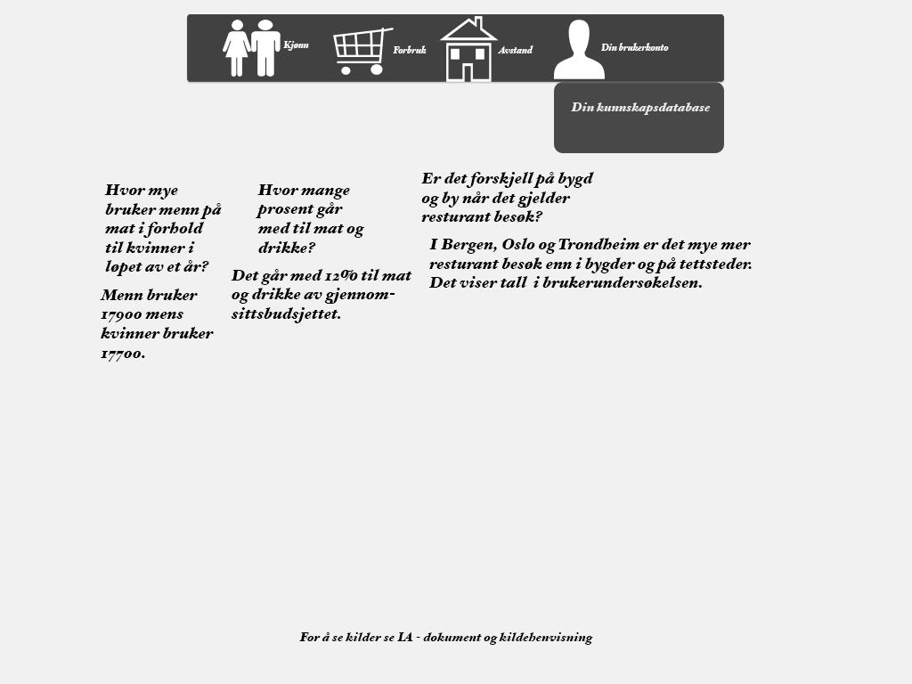
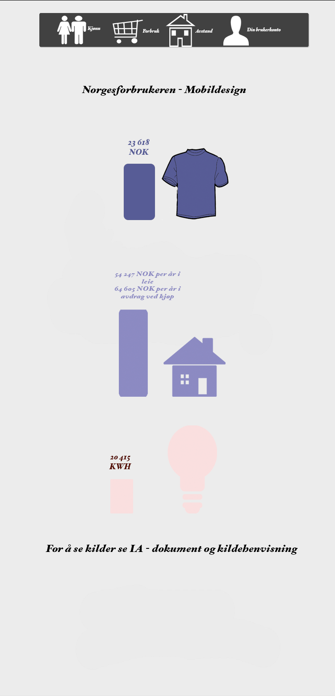

Norgesforbrukeren
Dette er et øvelses case jeg fikk av  for en tid tilbake. Caset gikk ut på følgende:
Bekk Consulting hadde en kunde som ønsket en nettjeneste der man skulle få rede på gjennomsnittsfofbruket til den gjevne nordmann. Dette var på bakgrunn av kjønn, alder og geografi. Tjenesen skal også være i stand til å svare på spørsmål. Eksempelvis:
- Hvor mye bruker en gjennomsnitts familie på mat?
- Hva er et normalt stømforbruk?
- Hvor mye bruker man på transport i løpet av en måned?
- Hva er et normalt klesbudsjett?
Tjenesten skulle også selvfølgelig fungere på mobil.
Løsningen:



Norgesforbrukeren - Interface Desktop

Norforbrukeren - Kunnskapsdatabase

Norgesforbrukeren - Mobil Interface
Prosjektet er laget i mai/juni 2015. Det var en strategi oppgave der konseptutvikling var det viktigste. Det var også som dere ser, ønsket med skisser som viser hvordan løsningen ville sett ut dersom den skulle utvikes. Hvis dere har noen spørsmål til dette prosjektet er det bare å ta kontakt. Hvordan dere kontakter meg finner dere på forsiden.